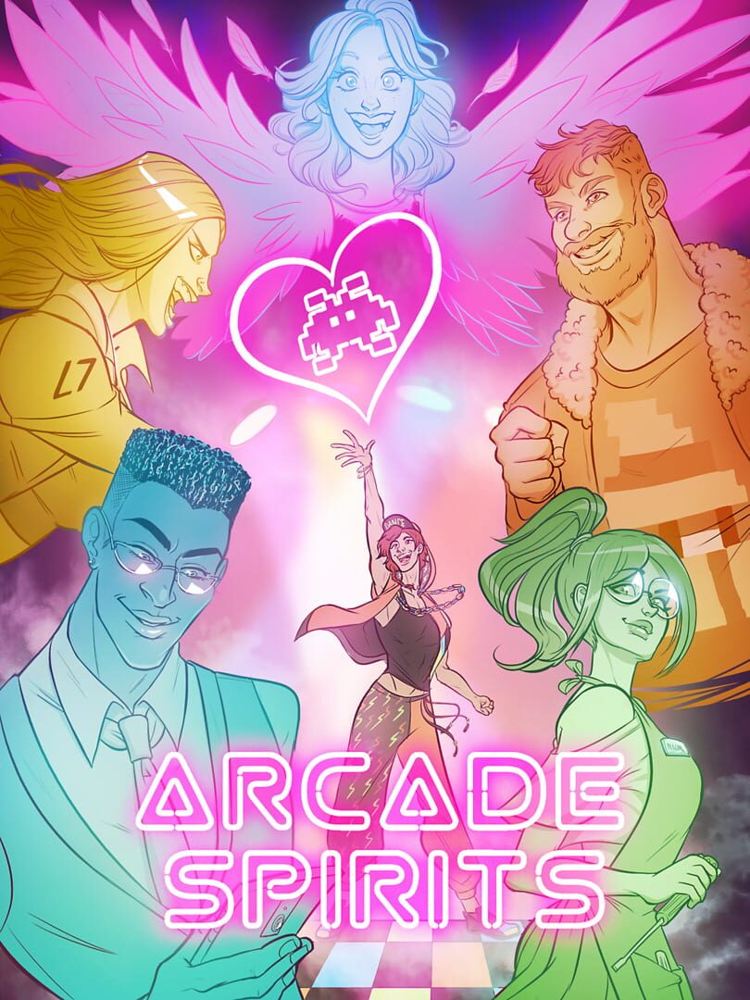

Arcade Spirits
Arcade Spirits
Details
|  | |
| Playtime | Not Played |
| Last Activity | Never |
| Added | 2024-05-11 22:49:54 |
| Modified | 2025-10-02 10:16:08 |
| Completion Status | Not Played |
| Library | Steam |
| Source | Steam |
| Platform | Macintosh PC (Linux) PC (Windows) |
| Release Date | 2019-02-12 |
| Community Score | 70 |
| Critic Score | 90 |
| User Score | |
| Genre | Adventure Arcade Indie Visual Novel |
| Developer | Fiction Factory Games |
| Publisher | PQube |
| Feature | Single Player |
| Links | Official Website Steam Itch YouTube Discord Subreddit Community Wiki Twitch Nintendo Playstation |
| Tag | Casual Character Customization Choices Matter Choose Your Own Adventure Cute Dating Sim Female Protagonist Funny Futuristic LGBTQ+ Mature Nudity Otome Retro Romance Sexual Content Simulation Singleplayer Story Rich Visual Novel |
Description
Arcade Spirits, a romantic visual novel, follows an alternate timeline set in the year 20XX where the 1983 video game crash never occurred. After a turbulent work history, you are granted employment at the Funplex, a popular arcade, home to a host of unique personalities and customers. Where will this new-found employment take you? Who will you meet along the way? Will you find the romance you're seeking?

Note: If you are a screen reader user, press the V key upon load to activate self-voicing and accessible menu options in the game. You will not need a screen reader to play this game, and may disable it as soon as self-voicing activates.


- Design your own character from the ground up - pronoun, hairstyle, skin tone, hair color, eye color and more are completely customizable and are reflected throughout the game in both gameplay and artwork!
- With roleplaying-based choices, you will be able to grow your personality and relationships in any way you desire; Friendship, Platonic or something more intimate! Work hard and build the relationship you desire with a total of seven romanceable characters!
- The Identity Identifier System, or IRIS, can track your relationship statuses with all characters throughout Arcade Spirits as well as your personality traits, from Quirky, Steady, and Kindly, to Gutsy and Basically.
- Everything you choose in Arcade Spirits, from your relationships to your personality, your crisis management moments, and a myriad other decision will have an effect on the future of your arcade!
Note: If you are a screen reader user, press the V key upon load to activate self-voicing and accessible menu options in the game. You will not need a screen reader to play this game, and may disable it as soon as self-voicing activates.